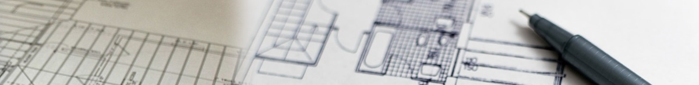

Geleceği tasarlıyoruz

2005 yılında yolculuğumuza ilk başladığımızdan beri AA Mimarlık olarak; mimari/ iç mimari proje, tasarım ve uygulama alanlarında çalışmalarımızı sürdürmekteyiz.
En nitelikli sonuca ulaşmak üzere birlikte tutku ve azimle çalışan, dinamik bir takımız. Bir takımın parçası olma duygusu ile sorumluluğu birlikte paylaştığımız çalışma sistemimiz; yeri geldiğinde bireysel olarak da daha cesur ve çözüm odaklı olmamızı sağlamaktadır.
Mimari ofis olarak proje sürecine yaklaşırken, edindiğimiz deneyimleri, güncel bir bakış açısıyla projelerimize yansıtmaktayız. Gelenekçi olmadan geleneksel olanı zamansıza çevirme becerisinin günümüz mimari ve tasarım anlayışındaki başarıyı oluşturduğuna inanıyoruz. AA Mimarlık olarak bu amaçla yarattığımız mekanları; işlevselliği, esnekliği ve yüksek tasarım değeri ile zamansız olmaya aday yapıyoruz.
Yeni malzeme teknolojilerini takip edip uygularken, doğru detay çözümlerini oluşturabilmek, bilinen çözümleri dönüştürebilmek, tasarımı başarılı bir ürün haline getirebilmek için önemlidir. Bu çerçevede; AA Mimarlık olarak, sahip olduğumuz vizyon ve bilgi birikimini bir araya getirip, hem tasarım hem de uygulamada doğru çözüme ulaşmayı hedeflemekteyiz.